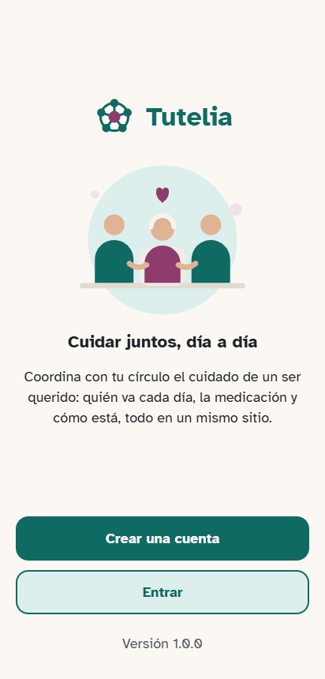

Inicio › Manual › Primeros pasos
Primeros pasos
Tutelia sirve para organizar entre varias personas el cuidado de alguien: quién va cada día, qué medicación toca, cómo está y qué ha pasado.

El círculo
Todo gira alrededor de un círculo: la persona cuidada y quienes la cuidan.
Cada círculo tiene su calendario, su medicación, su diario y sus personas.
Puedes estar en varios círculos y cambiar de uno a otro tocando su nombre, arriba en el inicio.
Los papeles
• Coordinación: organiza el círculo, invita a las demás personas y decide qué ve cada una.
• Familia y amistades: siguen cómo está la persona cuidada y echan una mano. Si además participan en los cuidados, ven más cosas (medicación, diario, salud).
• Servicios externos: profesionales o empresas que vienen a atender. Solo ven lo suyo.
Cada persona ve solo lo que su papel le permite; por eso esta ayuda te enseña solo lo que puedes hacer tú.
Si coordinas: por dónde empezar
Solo para: coordinación
1. Completa la ficha de la persona cuidada (inicio → «Ficha»): nombre, teléfono, domicilio y alergias.
2. Invita a quien vaya a ayudar (inicio → «Personas» → «Invitar a alguien»). Cada invitación da un código que la otra persona escribe en la app.
3. Pon los turnos en el calendario: visitas sueltas o turnos que se repiten cada semana.
4. Apunta la medicación con sus horarios. Puedes escanear la caja.
5. Si vienen profesionales o va a actividades, añádelos en «Servicios».
Si te han invitado: qué puedes hacer
Solo para: quien cuida, familia y amistades, servicios externos
1. Mira en el inicio el botón «Hoy»: lo que pasa hoy y lo que necesita atención.
2. En el calendario, apúntate a los turnos sin cubrir con «Me apunto».
3. Si das la medicación, márcala en la pestaña «Medicación» al darla.
4. Activa los avisos del móvil en tu perfil para enterarte a tiempo.
Gratis y premium
Lo básico es gratis: calendario, turnos, medicación, diario, contactos y alergias.
El premium es por círculo: paga una persona y lo tiene todo el círculo. Añade el botón de emergencia, Salud completa, prospectos explicados, gastos, chat, fotos y más.
Al crear tu primer círculo tienes 30 días de premium gratis, sin dar la tarjeta.
En esta ayuda, lo premium va marcado con «✦ Premium».
Si algo falla o se te ocurre una idea
Cuéntanoslo desde tu perfil → «Contacto y sugerencias». Lo leemos todo.
Si es un fallo, dinos en qué pantalla estabas y qué hiciste justo antes.
¿Aún no usas Tutelia?
Es gratis para organizar el día a día entre varias personas. Así se empieza.